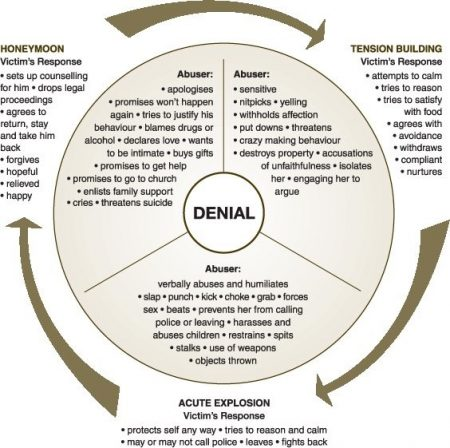

ABUSIVE MARRIAGES; WHAT MAKES LEAVING DIFFICULT?

Abusive marriages; What makes leaving difficult ?
There is no single day that ends before hearing the question “why don’t people leave abusive marriages?”
This question is asked by friends, clients and the general population. I see this question even more on social media. This question is even asked more in cases where lives are lost through intimate partner violence.
What makes it difficult for people to leave an abusive marriage?
Denial
Most people, if not all, get married with the intention of living happily ever after. This expectation makes people to give what they imagine is their all in a marriage setup. When things begin to change, and abuse gets in a marriage, the hope that they can give some more keeps them going.
There is a belief that if they try some more, they will make their marriage work, end the abuse in the marriage and bring life to stability. They constantly remind themselves of the future they envisioned and tell themselves that, that future is still possible if only they can manage to end the abuse in marriage. They keep trying and hoping.
Fear
There is fear that they will not be able to care for themselves or the children alone. This is even more so for those who were dependents on their spouses for survival. Sometimes, even in cases of those that have the money, they still feel incapacitated to do parenting alone. There is fear of answering the children’s questions of where daddy or mummy is.
There is the fear of children turning out differently if raised by one parent. There is fear of what family and society will think or say, fear of being judged as the person who failed the marriage. In some cases, there is fear that the abuser may kill the one planning to quit the marriage or catch up with them long after the victim of abuse has left the marriage.
Data from the global homicide research show that spousal murder is likely to take place from the first to the third month of spousal divorce or breakup. This means that quitting marriage doesn’t necessarily assure one’s safety even when staying in abusive marriage keeps one’s life threatened. The best way to work around divorce or breakup will be discussed in a later piece.
Beliefs
These beliefs may be influenced by the families where the victims came from and also the religion they subscribe to. Some of the statements frequently quoted are; God hates divorce, a man who loves you will beat you and its okay so long as you were wrong, that a wise woman builds their house with their own hands, that “ndoa ni kuvumilia” translated as to keep a marriage one has to endure suffering.
Other popular beliefs are men are polygamous in nature, that man is the head so it’s a responsibility to make the marriage work, all men are cheats and that it rains everywhere, that so long as he is not beating you, you can handle, that when you quit your parents will need to refund dowry and disciplining a woman is a man’s traditional right.
Raising children with these kind of beliefs without explaining when and how these beliefs apply is allowing them to depend on a system that no longer works for them. I have heard young boys being castigated for being bullied or beaten by a girl. There is a way some culture teaches the young boys that they are superior to the girls. I believe the lessons should be that no one is allowed to treat them wrong whether girl or boy.
When one realizes their marriage is no longer working, they suffer intense guilt and shame because of these deep-seated beliefs that no longer work. If beliefs have to be used, children need to be taught proper exemptions so that they are not maintained in the very situations that are life threatening.
How the victim of abuse was raised
According to the law of attraction, we attract who we are. This does not apply to the physical attributes, attraction largely applies to the level of mental wellness (thinking patterns including life perspectives, the emotional wellbeing and the behavior one presents). A child who was raised in an abusive home is highly likely to attract an abuser because the only mental image they have of a significant other is that of an abuser.
They may repeatedly hate what they saw as children but unless they heal their childhood wounds, they are likely to attract the people who represent what they mentally know as normal behavior, in this case an abusive marriage partner.
While some of those who witnessed abuse in their parents’ marriage decide never to get married, others who marry are highly likely to attract abusers. Those who keep away relationships for fear of facing what their parents faced are still unhealed and have no capacity to experience the beauty that life and relationships have to offer.
How do you tell a woman who saw and witnessed domestic abuse in their home to leave her marriage when a spouse becomes violent yet all they witnessed is the parent enduring abuse and making the marriage work?
Childhood issues are more complex and one way of healing them is by investing in professional therapy. A competent professional has the capacity to take history, help to identify the unhealed childhood areas, give insight and walk a person into the journey of healing.
Lack of skills
Apart from unhealed childhood, both the perpetrator and victim of abuse lack skills to deal with conflicts. When a victim heals, they are able to form healthy boundaries that stops perpetrators of abuse from using abuse on them.
When the perpetrator heals, they are able to use healthier methods of conflict resolution and decision making, negotiate better by using effective communication skills.
Undetected Isolation
Part of what a potential abuser does before getting to explosion in matters abuse is isolate the victim from the family and loved ones. Isolation is so hidden that the victims do not realize. Some methods used to isolate are: insisting that they do not want their partners to go to work and that they will fully provide (some do and others do not).
In some cases, the abuser may be uncomfortable with all the friends their partner has and discourage the partner from keeping them. The reasons for discomfort may range from friends being unmarried, being of bad moral standing, of different social economic class or religious affiliations, etc.
People with potential to abuse will even ask the partner never to visit their parents or families alone and that visiting as a couple shows more solidarity. Some show their love by driving their partners to work, picking and treating them to lunch and even picking them after work. Some insist on transparency about all communication; “Who was that on the phone with you? What were they saying?” Some are known to go through their partner’s phone. Sounds like love, right?
Initially isolation is mistaken for love and the partner being isolated feels more loved when especially the separation means spending more time together such as holidays together, dinners together. In reality, a lot of togetherness leads to one getting lost in the other as the lines that separate two individuals get lost. Stalking or controlling one’s partner is a sign of abuse.
While it is true that isolation is the first step the abuser takes, not every action described above may lead to abuse. If you realize that you are slowly reducing the bond between friends and family and constantly depending on your partner alone and your partner is largely contributing to the reduced bonding, then you are probably dealing with the initial stage of abuse.
The emotional bond between a husband and wife needs to be very good but that doesn’t mean disconnecting with the others. The relationship between husband and wife is very important but it is not the only relationship. The relationship is not everything as one still has a life; career, family, friends, hobbies, a social life, etc. Moderation is key.
When fully isolated, the abuser attacks because the victim of abuse at this point largely has no one to turn to, having already isolated themselves from friends and family. All this time during isolation, they painted the perpetrator as such a loving spouse (which is what the victim had perceived) and so it becomes difficult to begin painting the very loving spouse as an abuser to people “who considered you couple goals”. The victim endures abuse in silence since they are alone and too ashamed.
Low self-esteem
No one can achieve anything unless they believe they can. When isolation has successfully happened, the victim of abuse is all by themselves. The perpetrators use different methods of lowering the victim’s self-esteem which include: blaming their spouse and guilt tripping them for their own problems (you made me do it, it is your fault that I am struggling with a,b,c,d), if at all they admit to have them.
When confronted about any negative behavior, they get angry, and justify hurt feelings by lashing out at their partner. If they make mistakes, they hardly take responsibility, they blame their partner or someone else. They also blame the partner for their feelings by citing that if the partner had done things right, they would not have felt that way.
They degrade their partner. The partner feels insufficient all the time and they end up believing they are the ones who have a problem. When the marriage is not working and when it threatens their life, they hold on believing that it’s their fault and that their partner is doing them a favour by keeping them. Some even feel that if they leave the abusive partner in marriage, no one else will love them and want to keep them, like the abusive partner is too good for them.
Confusing the apologies with change of behavior Cycle of abuse-developed by Dr Lenore Walker (1979)
The honeymoon phase confuses the victim. It makes the victim believe that the perpetrator has changed and that the marriage and themselves are free from abuse. This gives them hope, increases their trust on their partner and gives them new energy to do everything in their capacity to keep their partner from getting angry.
What the victim does not know is, unless the perpetrator has invested in his healing or gone through professional therapy, then the honeymoon phase will elapse and they will go back to the tension building, explosion and then honeymoon. Unless marital therapy happens, or both go through programs that help them heal and grow, living a fulfilled marriage is highly unlikely.